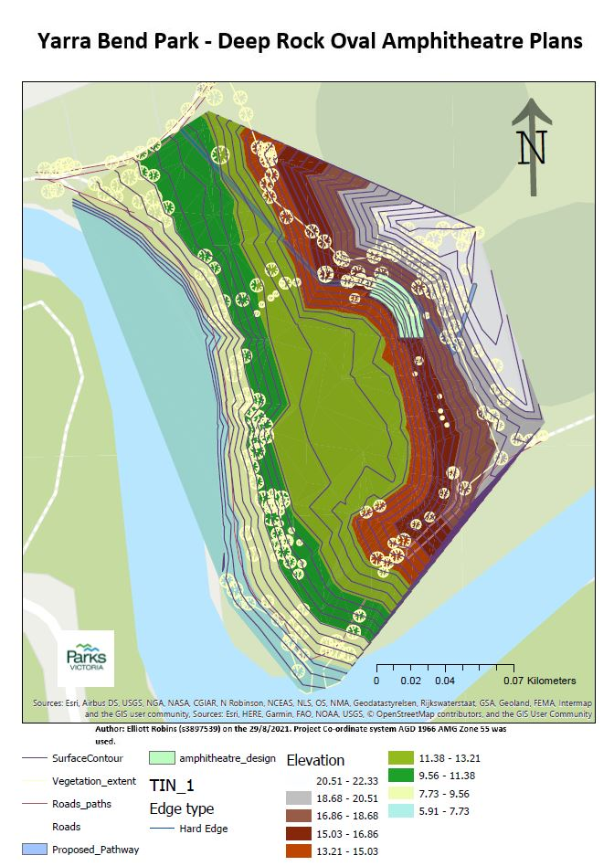
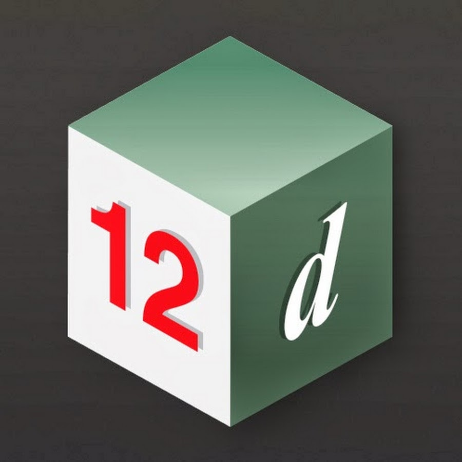

Geoportfolio
Elliott Robins
About
This website is the geoportfolio of Elliott Robins. The website entails
information that is academically and profesionally related to the field of geospatial science
A brief introduction about myself is that I am born and raised in Melbourne, Australia and as of September 2024, I am in my fourth and final year of the
Bachelor of Applied Science (Surveying) (Honours) course. My surveying-related interests is working with remote scanning, aerial photogrammetry and construction surveying techniques.
My current surveying projects involve construction of multiple level crossing removal projects across the South-East region of Victoria, Australia. These level crossing removal projects
require an in depth understand of both civil and structural engineering surveying.
My own personal hobbies include travelling and playing sports!
Academic Portfolio Overview
Applied Geospatial Techniques
Applied Geospatial Techniques is course that combines the principles of surveying, GIS and geospatial techniques in a practical approach. The courses assessments are set up as 2
surveying practical, 3 GIS practicals and 1 Cartographic practical. After the practical's are completed and assessed we are asked to complete portfolio's of the practical experiences
to summarise our learning in the course.
- Survey Component - Part A: A proposed letter to client about the survey methods required used to survey Yarra Bend Park
- Survey Component - Part B: Surveyng field work risk assessment
- GIS Practical 2a: The collection of GIS data and the correct storage of it
- GIS Practical 2b: How to process GIS data in ARCGIS pro
- GIS Practical 2c: An analytical report of the processes involved within GIS data collection and processing
- Cartographic Map Production: A Cartographic map production of Yarra Bend Park
- Assignment 4a Presentation: Reflection Powerpoint
- Assignment 4b Presentation: Reflection presentation
Below are an image of one of my submissions:
Note: If map display is too small, right-click the image and 'Open in new tab' to allow zooming of the map.
Melbourne Map: All 7-11 locations in Melbourne City

Terrestrial Surveying
Terrestrial Surveying focuses on the understanding of conducting surveying of the existing surface of the earth
whilst also standing on that surface. This course taught the foundation knowledge of the most common surveying
equipment and to most effeciently use them to conduct terrestrial surveys.
The assessments that I had to complete were:
- Assignment 1a - Road boundary and MGA2020 setout
- Assignment 1b - EDM Calibration
- Instrument Calibration Practical
- Intensive Field Projects
- Reconnaissance for Intensive Field Projects
- Weekly Quizes
- 2022 Take home Exam Replacement Assignment
Note: If map display is too small, right-click the image and 'Open in new tab' to allow zooming of the map.
Terrestrial Field Computations

Industry Experience
This page will briefly cover all my work experience (as of September 2024) within the surveying industry. The company that I have worked for is Fulton Hogan Construction and this page
will outline my experience gained and skills I have learned from my time at Fulton Hogan along with an overview of my current surveying skillset.
Fulton Hogan Construction
Undergraduate Surveyor
July 2022 - September 2024
During my time at Fulton Hogan I have worked on multiple level crossing removal projects and refined my surveying knowledge and techniques there. I have had the opportunity to work alongside many
senior surveyors and learn from them. Whilst being at Fulton Hogan I have conducted both civil and structural surveys using the 12d model and 12d field software. Additionally, I also have experience
creating models for surveyors using CAD software like Auto-CAD and 12d model. Whilst being an Undergraduate Surveyor it has been crucial to have an eye for detail stroing communication skills being of
the multitude of team members involved in large scale projects.
Skills and Proficiencies
|  |
12d Model |
 |
Lieca |
 |
AutoCAD |
|
Trimble Business Center |
 |
12d synergy database management |
 |
Photogrammetry and Drone Mapping |
 |
Web Design: HTML & CSS |
 |
Web GIS |
 |
Python Programming |
 |
SQL Database Management |
Credits and Attributions
The following programming languages and software were used to create the website
- HTML
- CSS
- JavaScript
- Visual Studio Basic
The deliverables contains content from the following subjects:
- Cartography 2 (GEOM2079)
- Applied Geospatial Techniques (GEOM2083)
Special thanks to the following people who have helped me make this website with their expertise and guidance:
As per the policy of using the Flaticons with a free account, the attributions and crediting of the creators of the icons are as below:
Attributions of icons used: